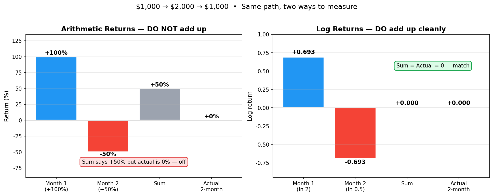
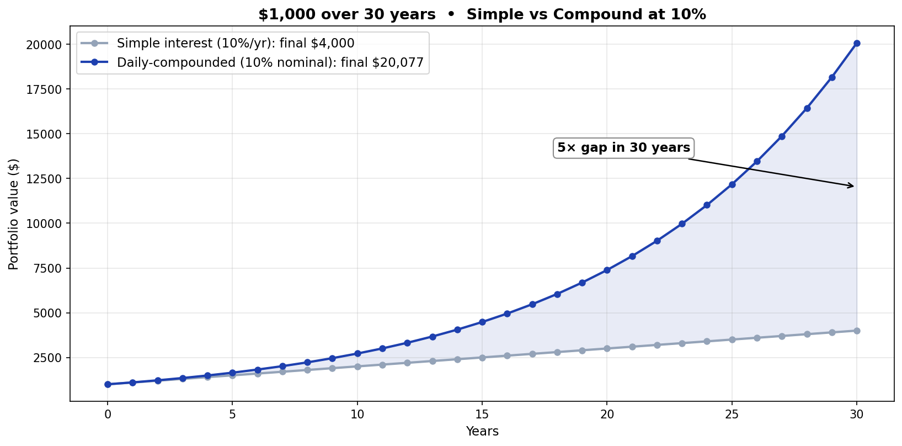
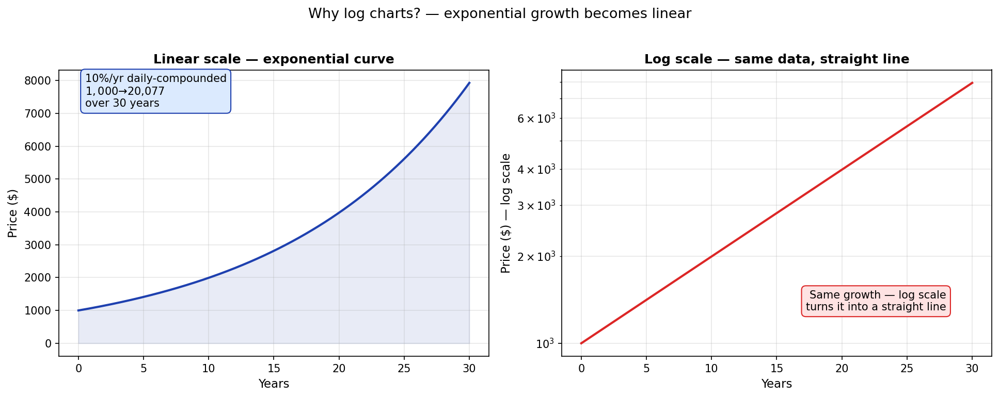

Returns, Compounding, and Log Charts¶
"My fund was +10% then −10%, so it's flat at 0%, right?" — No. It's −1%.
The stock market runs on compounding. The "returns" we use day-to-day don't simply add up. That single fact is what arithmetic returns, log returns, and log charts are all about. This article walks through why those three are one package — using pictures.
The 30-second version — why returns don't add¶
Suppose you invest $1,000, and a month later it's $2,000, and the month after that it's back to $1,000.
$1,000 → $2,000 → $1,000
+100% −50%
Intuitively +100% + (−50%) = +50% — but the actual answer is 0%. Arithmetic returns don't add up.

Left: arithmetic returns sum to +50%, but reality is 0%. Off by a lot. Right: log returns sum to 0, and reality is 0. Match.
That's the heart of this article. Log returns convert multiplication into addition, and log charts visualize that fact.
1. Two kinds of returns¶
Arithmetic return (the one we use day-to-day)¶
Arithmetic return = current price / previous price − 1
Intuitive. $1,000 → $2,000 is +100%. $2,000 → $1,000 is −50%.
Log return (the one used in quant work)¶
Log return = ln (current price / previous price)
ln is the natural logarithm — =LN() in Google Sheets or Excel. Less intuitive, but everything resolves once you know this one identity:
log return = ln(1 + arithmetic return)
When the arithmetic return is small (short windows, modest moves), the two values are practically the same.
When they diverge¶
The further the arithmetic return is from zero, the more the two values diverge:
| Arithmetic | Log |
|---|---|
| +5% | +4.88% |
| +10% | +9.53% |
| +50% | +40.55% |
| +100% | +69.31% |
| −50% | −69.31% |
| −90% | −230.26% |
A +100% and a −50% — log-equivalents are +0.693 and −0.693, exact mirror images. That's the whole trick.
2. Why use log returns at all?¶
Same data, same 100 years — fund A and fund B. Which one do you choose?

Fund A's returns are clustered tight around the middle — looks stable. Fund B's returns are spread wide — looks volatile. Instinct says A.
If you take each year's return, log-transform it, and sum:
| 100-year cumulative log return | 100-year cumulative arithmetic | |
|---|---|---|
| Fund A | 3.77 | 4,271% (≈ 43×) |
| Fund B | (much higher) | overwhelmingly higher |

Fund B is overwhelmingly better. Higher volatility doesn't mean lower return. The visual impression of "stable = better" is wrong here.
Doing this calculation with arithmetic returns would mean multiplying 100 numbers together: (1+r₁)·(1+r₂)·…·(1+r₁₀₀) − 1. With log returns, it's just addition: r₁ + r₂ + … + r₁₀₀. Vastly easier, and the intuition holds better.
📐 The math (basic logarithm rules)
ln(a/b) = ln(a) − ln(b) ← log of a quotient
ln(1 + arithmetic) = ln(current/previous)
= log return
3. Compounding — why "every day" matters¶
Simple vs compound — the 30-year gap¶
Same 10% rate, 30 years, $1,000 starting capital:

- Simple interest (10% on principal each year): $4,000
- Compound (10% nominal, daily-compounded → effective 10.5155%): $20,076 — about 5× the simple version
The longer the horizon, the wider the gap. This is what Warren Buffett calls "the magic of time."
Compounding gets stronger the more often you apply it (with a ceiling)¶
At 10% nominal rate, the effective annual rate depends on how often you compound:

| Frequency | Effective annual rate |
|---|---|
| Annual | 10.0000% |
| Semi-annual | 10.2500% |
| Quarterly | 10.3813% |
| Monthly | 10.4713% |
| Daily | 10.5155% |
| Continuous (period → 0) | 10.5171% = e^0.10 − 1 |
The cap turns out to be e^rate − 1. Compounding and the exponential function (e) are family. That's also the secret behind log charts in the next section.
The stock market compounds daily¶
Stock prices change daily and apply compounding daily — every day's return multiplies into your balance. That's why arithmetic returns can't simply be added.
4. Log charts — same picture, different truth¶
Almost every charting tool has a "log scale" toggle. Flip it and the curve transforms. Why?

Both panels show the same 30-year compound growth.
- Linear scale: an exponential curve that hockey-sticks at the end → "wow, late stage went vertical"
- Log scale: a clean straight line → "actually, the growth rate has been steady the whole time"
Same fact, two ways to display it.
What log charts tell you¶
The slope of the line = the compound growth rate. Steeper line = faster growth, flatter line = slower growth. If the curve deviates from a straight line, the growth rate has changed — that's a regime shift.
For long charts (10+ years), log scale almost always gives the more accurate impression. Linear scale makes the late period look like everything's exploding, but log scale shows you that the growth rate has been roughly constant the whole time.
📐 Why log scale produces a straight line (math)
If the price grows at a constant rate `r` per period:price(t) = start × (1 + r)^t
ln(price(t)) = ln(start) + t · ln(1 + r)
ln(price(t)) = (constant1) + (constant2) · t ← a straight line!
5. Summary¶
| Concept | The point |
|---|---|
| Arithmetic return | Intuitive, but doesn't sum cleanly |
| Log return | Less intuitive but sums cleanly — the natural language of compound markets |
| Conversion | log return = ln(1 + arithmetic return) |
| Compounding | Stock market compounds daily — gap with simple interest grows fast over time |
| Log charts | Compound growth becomes a straight line — slope = growth rate |
Why this matters: the next article — How is my portfolio actually doing? — TWR vs MWR — covers Time-Weighted Return, Money-Weighted Return, and DCF, all built on this foundation. It also explains why your brokerage app and your own calculation can disagree.
The same concept underpins Shannon's Demon (S1 series) — arithmetic mean vs geometric mean, and the mathematical identity of "volatility drag."
Next: How is my portfolio actually doing? — TWR vs MWR
Related: Shannon's Demon — arithmetic vs geometric mean (S1 series) | Volatility Dashboard